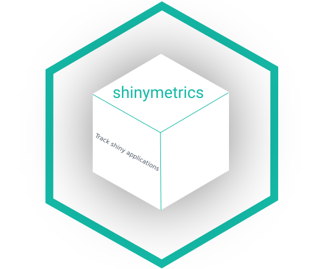

Integrations
integrations.RmdThe only thing that should be adapted dependending on the UI is the consent modal.
Bootstrap 3
library(shiny)
library(shinymetrics)
tracker <- Shinymetrics$
new()$
track_recommended()
ui <- fluidPage(
tracker$include(),
# bootstrap 3 modal
trackingModalBS3(),
h1("My app")
)
server <- function(input, output) {
# print useful information
shinymetrics_server()
}
shinyApp(ui, server)Bootstrap 4
library(shiny)
library(shinymetrics)
tracker <- Shinymetrics$
new()$
track_recommended()
ui <- fluidPage(
theme = bslib::bs_theme(version = 4L),
tracker$include(),
# bootstrap 4 modal
trackingModalBS4(),
h1("My app")
)
server <- function(input, output) {
# print useful information
shinymetrics_server()
}
shinyApp(ui, server)Bootstrap 5
This example uses a toast (only available for Bootstrap 5), you can also use a modal with trackingModalBS5().
library(shiny)
library(shinymetrics)
tracker <- Shinymetrics$
new()$
track_recommended()
ui <- fluidPage(
theme = bslib::bs_theme(version = 4L),
tracker$include(),
# bootstrap 5 toast
trackingToastBS5(
full_width = TRUE,
background = "white",
position = "bottom",
enable_opts = list(
expires = as.Date("2100-10-01")
)
),
h1("My app")
)
server <- function(input, output) {
# print useful information
shinymetrics_server()
}
shinyApp(ui, server)shinymobile
library(shiny)
library(shinyMobile)
library(shinymetrics)
tracker <- Shinymetrics$
new()$
track_recommended()
ui <- f7Page(
title = "My app",
f7SingleLayout(
navbar = f7Navbar(
title = "Single Layout",
hairline = TRUE,
shadow = TRUE
),
toolbar = f7Toolbar(
position = "bottom",
f7Link(label = "Link 1", href = "https://www.google.com")
),
f7Shadow(
intensity = 16,
hover = TRUE,
h1("Application")
)
)
)
server <- function(input, output, session) {
# print useful information
shinymetrics_server()
observe({
# failsafe
if(is.null(input$shinymetricsEnabled))
return()
# shinymetrics tracking is already enabled
# no need to show the modal
if(input$shinymetricsEnabled)
return()
f7Dialog(
id = "tracking",
type = "confirm",
title = "Tracking?",
text = "Enable tracking?"
)
})
observeEvent(input$tracking, {
if (input$tracking) {
shinymetrics_enable()
}
})
}
shinyApp(ui, server)bs4Dash
library(shiny)
library(bs4Dash)
tracker <- Shinymetrics$
new()$
track_recommended()
ui <- dashboardPage(
header = dashboardHeader(
title = dashboardBrand(
title = "My dashboard",
color = "primary",
href = "https://adminlte.io/themes/v3",
image = "https://adminlte.io/themes/v3/dist/img/AdminLTELogo.png"
),
tracker$include(),
trackingModalBS4()
),
sidebar = dashboardSidebar(),
body = dashboardBody(
lapply(getAdminLTEColors(), function(color) {
box(status = color)
})
),
controlbar = dashboardControlbar(),
title = "DashboardPage"
)
server <- function(input, output) {
# print useful information
shinymetrics_server()
}
shinyApp(ui, server)